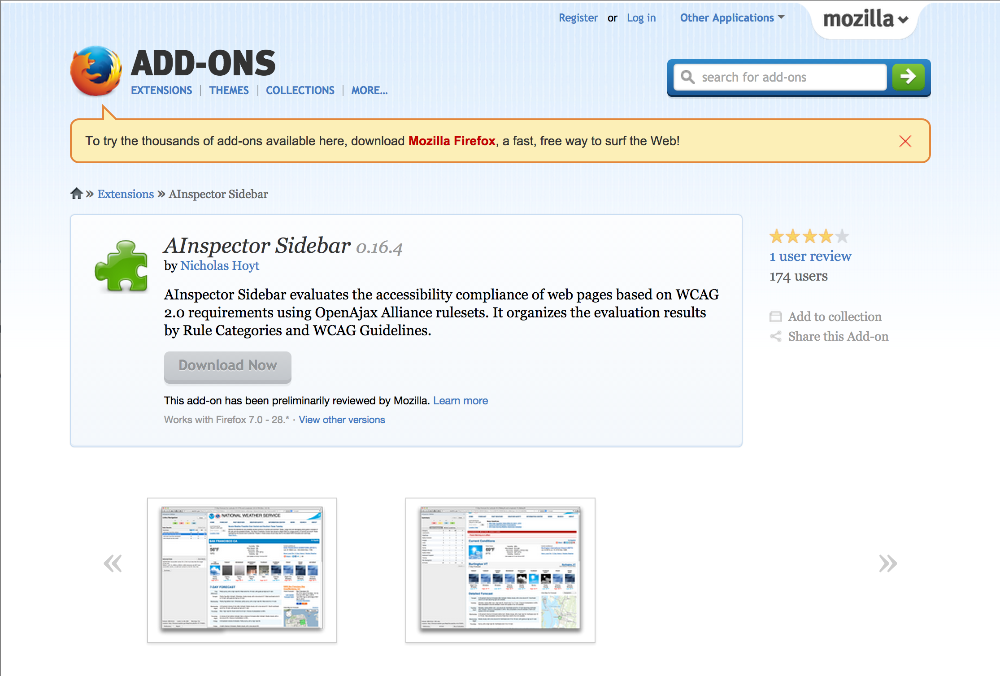

AInspector Sidebar for Firefox
- Designed for UX designers, developers and quality assurance testers to understand the accessibility of a specific page
- Open source
- Update your version of Firefox to the latest version to ensure compatibility
- Analyzing current web page DOM for accessibility features
- Organizes rules by Rule Categories and WCAG Guidelines
- Map rules to WCAG 2.0 Single A and AA requirements
- Highlighting element information
AInspector Sidebar form Mozilla Add-ons Website
